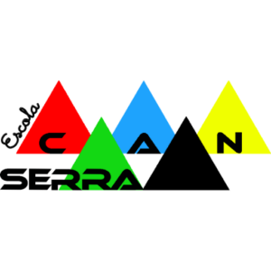

Cinc colors, un sistema
Cada color té una feina: identifica una etapa educativa. El color mai és decoració aleatòria; si una peça és d'Infantil, és groga.
Escola Can Serra · Guia de marca i interfície
Les peces per construir una comunicació coherent, alegre i accessible: del web a les circulars, de Dinantia a la samarreta. Tot neix de tres coses que ja són de l'escola: els cinc cims del logotip, les lames de colors de la façana i la Farigoleta.
Quatre idees que decideixen per nosaltres quan dubtem.
Cada color té una feina: identifica una etapa educativa. El color mai és decoració aleatòria; si una peça és d'Infantil, és groga.
Tipografia hiperllegible, contrast AA, focus visible, text ampliable i respecte pel moviment reduït. Si no és accessible, no està acabat.
Formes planes i geomètriques com el logotip, ombres d'«adhesiu» i molt d'aire. L'energia ve del color; l'ordre, de la retícula.
Els patrons surten de l'edifici (les lames), del logotip (els cims) i de la comunitat (la Farigoleta, la lletra a mà). Res de plantilles genèriques.
Cinc cims que se superposen: l'esperit cooperatiu de les anelles olímpiques, els cinc continents i una serralada. Creat el 1979 i redibuixat el 2010. Aquesta proposta en fa una versió vectorial neta per a pantalla, fidel a l'original.

Logotip original (2010) · referència32 px120 pxNo canviïs l'ordre dels colors.
No el deformis ni l'estiris.
No el giris ni hi afegeixis efectes.
No el posis sobre fons sorollosos.
Els cinc colors del logotip, refinats per a pantalla. Els tons vius (500) són per a grafisme, fons i text gran; per a text petit fem servir les variants fosques (700–800). Toca un color per copiar-ne el valor.
El codi de color s'aplica amb un sol atribut: data-cycle="infantil". Totes les peces (etiquetes, targetes, pestanyes, calendari) hereten el color correcte.
| Etapa | Cursos | Color | Etiqueta | Fons | |
|---|---|---|---|---|---|
| Infantil | I3 · I4 · I5 | Groc Sol | Infantil | I3 | |
| Cicle Inicial | 1r · 2n | Verd Farigola | Cicle Inicial | 1r | |
| Cicle Mitjà | 3r · 4t | Blau Cel | Cicle Mitjà | 3r | |
| Cicle Superior | 5è · 6è | Vermell Cim (600) | Cicle Superior | 5è | |
| Comunitat | Famílies · AFA · tota l'escola | Negre Serralada | Tota l'escola | AFA |
| Mostra | Parella | Ràtio | Nivell | Ús |
|---|---|---|---|---|
| Aa | Tinta 900 / Paper | 17,4 | AAA | Text principal |
| Aa | Tinta 500 / Paper | 5,2 | AA | Metadades, text subtil |
| Aa | Blanc / Vermell 600 | 5,1 | AA | Botó principal, Cicle Superior |
| Aa | Tinta / Blau 500 | 5,9 | AA | Fons de Cicle Mitjà |
| Aa | Tinta / Verd 500 | 6,4 | AA | Fons de Cicle Inicial |
| Aa | Tinta / Groc 500 | 12,8 | AAA | Infantil, crides a l'acció |
| Aa | Vermell 800 / Vermell 100 | 7,0 | AAA | Etiquetes suaus (igual en les altres etapes) |
| Aa | Blanc / Blau 500 | 3,1 | Només text gran | Evitar: fes servir tinta |
| Aa | Groc 500 / Paper | 1,4 | Decoratiu | Mai per a text |
Tres veus: una display amb caràcter, una de text pensada per a la llegibilitat i una lletra a mà per als detalls. Totes són lliures a Google Fonts.
Títols, botons, xifres. Pes 700–800, espaiat negatiu en mides grans.
ABCÇDEFGHIJKLL·LMNOPQRSTUVWXYZ 0123456789
Text i interfície. Dissenyada pel Braille Institute per a lectors amb baixa visió: el zero barrat i les formes diferenciades són intencionades.
ABCÇDEFGHIJKLL·LMNOPQRSTUVWXYZ Il1 O0 0123456789
Notes a mà, adhesius i exclamacions («Mu!», «Colònies!»). Mai per a text llarg ni informació important.
Hola! Sóc la Farigoleta
Base de 4 px, cantonades generoses i una vora de 2 px que dona als elements aspecte de retallable. L'ombra «adhesiu» (desplaçada i sense difuminar) és la signatura de la interfície.
--space-14 px--space-28 px--space-312 px--space-416 px--space-524 px--space-632 px--space-748 px--space-864 px--space-996 px--shadow-sticker--shadow-sticker-lg--shadow-soft--shadow-floatRecursos gràfics propis que fan que una peça sigui de Can Serra encara que no hi aparegui el logotip.
Les lames. Les persianes de colors de la façana, en el seu ordre irregular real. Separadors, capçaleres i petites vinyetes. background: var(--lames)
Versió gràfica. Amb una màscara de franges per recrear l'espai entre lames. Mai com a fons de text.
La serralada. Cims superposats per a peus de pàgina, portades i separadors de secció.
Cobertes generatives. Substitueixen la foto quan no n'hi ha o quan hi surten infants sense autorització. Color d'etapa + icona + paraula a mà.
Una escola on hi cap tothom.
Una sola paraula clau per títol, sempre en groc. <span class="marker">
Traç de 2 px, 24 × 24, puntes arrodonides (estil Lucide). S'usen des d'un sprite SVG: <svg class="icon"><use href="#i-book"/></svg>. Hereten el color del text.
Les peces de la web, llestes per combinar. Totes funcionen en mode clar i fosc i amb teclat.
Superfície blanca, vora suau i icona amb el color de l'etapa.
Per destacar. El text passa a tinta o blanc segons el contrast.
Per trencar el ritme. Una per secció com a màxim.
Coberta generativa, etiqueta d'etapa, títol i extracte de tres línies.
Llegeix-laBarra superior de color i cim decoratiu.
Per a calendaris i agendes.
Per a qualsevol qüestió, parla primer amb la tutora o el tutor.
Escrivim com parlaríem a la porta de l'escola: amb calidesa, clar i sense deixar ningú fora.
Tractem de tu les famílies i expliquem les coses en primera persona del plural: «fem», «anem», «ens ho vam passar d'allò més bé».
Frases curtes, una idea per paràgraf, la informació útil primer (què, quan, on). Títols en minúscula de frase.
«Infants», «alumnat», «famílies», «mestres». Formes dobles quan cal: «paleontòlegs i paleontòlogues».
Demana hora amb la tutora o el tutor.
Benvolgudes famílies, dimecres anem a la granja!
Un any a Can Serra
Els pares hauran de sol·licitar cita prèvia al professorat corresponent.
Es comunica als pares dels nens que la sortida és dimecres.
UN ANY A CAN SERRA!!!
Una escola inclusiva necessita una web inclusiva. Objectiu: WCAG 2.2 nivell AA a totes les pàgines.
prefers-reduced-motion.aria-hidden.Tot el sistema viu en un únic fitxer CSS amb variables.